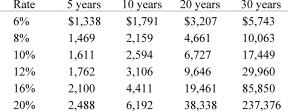

5. Defining Your Investment Goals
Warren Buffett likes to say that the first rule of investing is “Don’t lose money,” and the second rule is, “Never forget the first rule.” I too believe that avoiding loss should be the primary goal of every investor. This does not mean that investors should never incur the risk of any loss at all. Rather “don’t lose money” means that over several years an investment portfolio should not be exposed to appreciable loss of principal.
While no one wishes to incur losses, you couldn’t prove it from an examination of the behavior of most investors and speculators. The speculative urge that lies within most of us is strong; the prospect of a free lunch can be compelling, especially when others have already seemingly partaken. It can be hard to concentrate on potential losses while others are greedily reaching for gains and your broker is on the phone offering shares in the latest “hot” initial public offering. Yet the avoidance of loss is the surest way to ensure a profitable outcome.
A loss-avoidance strategy is at odds with recent conventional market wisdom. Today many people believe that risk comes, not from owning stocks, but from not owning them. Stocks as a group, this line of thinking goes, will outperform bonds or cash equivalents over time, just as they have in the past. Indexing is one manifestation of this view. The tendency of most institutional investors to be fully invested at all times is another.
There is an element of truth to this notion; stocks do figure to outperform bonds and cash over the years. Being junior in a company’s capital structure and lacking contractual cash flows and maturity dates, equities are inherently riskier than debt instruments. In a corporate liquidation, for example, the equity only receives the residual after all liabilities are satisfied. To persuade investors to venture into equities rather than safer debt instruments, they must be enticed by the prospect of higher returns. However, as discussed at greater length in chapter 7, the actual risk of a particular investment cannot be determined from historical data. It depends on the price paid. If enough investors believe the argument that equities will offer the best long-term returns, they may pour money into stocks, bidding prices up to levels at which they no longer offer the superior returns. The risk of loss stemming from equity’s place in the capital structure is exacerbated by paying a higher price.
Another common belief is that risk avoidance is incompatible with investment success. This view holds that high return is attainable only by incurring high risk and that long-term investment success is attainable only by seeking out and bearing, rather than avoiding, risk. Why do I believe, conversely, that risk avoidance is the single most important element of an investment program? If you had $1,000, would you be willing to wager it, double or nothing, on a fair coin toss? Probably not. Would you risk your entire net worth on such a gamble? Of course not. Would you risk the loss of, say, 30 percent of your net worth for an equivalent gain? Not many people would because the loss of a substantial amount of money could impair their standard of living while a comparable gain might not improve it commensurately. If you are one of the vast majority of investors who are risk averse, then loss avoidance must be the cornerstone of your investment philosophy.
Greedy, short-term-oriented investors may lose sight of a sound mathematical reason for avoiding loss: the effects of compounding even moderate returns over many years are compelling, if not downright mind boggling. Table 1 shows the delightful effects of compounding even relatively small amounts.
Table 1
Compound Value of $1,000 Invested at Different Rates of Return and for Varying Durations

As the table illustrates, perseverance at even relatively modest rates of return is of the utmost importance in compounding your net worth. A corollary to the importance of compounding is that it is very difficult to recover from even one large loss, which could literally destroy all at once the beneficial effects of many years of investment success. In other words, an investor is more likely to do well by achieving consistently good returns with limited downside risk than by achieving volatile and sometimes even spectacular gains but with considerable risk of principal. An investor who earns 16 percent annual returns over a decade, for example, will, perhaps surprisingly, end up with more money than an investor who earns 20 percent a year for nine years and then loses 15 percent the tenth year.
There is an understandable, albeit uneconomic, appeal to the latter pattern of returns, however. The second investor will outperform the former nine years out of ten, gaining considerable psychic income from this apparently superior performance. If both investors are money management professionals, the latter may also have a happier clientele (90 percent of the time, they will be doing better) and thus a more successful company. This may help to explain why risk avoidance is not the primary focus of most institutional investors.
One of the recurrent themes of this book is that the future is unpredictable. No one knows whether the economy will shrink or grow (or how fast), what the rate of inflation will be, and whether interest rates and share prices will rise or fall. Investors intent on avoiding loss consequently must position themselves to survive and even prosper under any circumstances. Bad luck can befall you; mistakes happen. The river may overflow its banks only once or twice in a century, but you still buy flood insurance on your house each year. Similarly we may only have one or two economic depressions or financial panics in a century and hyperinflation may never ruin the U.S. economy, but the prudent, farsighted investor manages his or her portfolio with the knowledge that financial catastrophes can and do occur. Investors must be willing to forego some near-term return, if necessary, as an insurance premium against unexpected and unpredictable adversity.
Choosing to avoid loss is not a complete investment strategy; it says nothing about what to buy and sell, about which risks are acceptable and which are not. A loss-avoidance strategy does not mean that investors should hold all or even half of their portfolios in U.S. Treasury bills or own sizable caches of gold bullion. Rather, investors must be aware that the world can change unexpectedly and sometimes dramatically; the future may be very different from the present or recent past. Investors must be prepared for any eventuality.
Many investors mistakenly establish an investment goal of achieving a specific rate of return. Setting a goal, unfortunately, does not make that return achievable. Indeed, no matter what the goal, it may be out of reach. Stating that you want to earn, say, 15 percent a year, does not tell you a thing about how to achieve it. Investment returns are not a direct function of how long or hard you work or how much you wish to earn. A ditch digger can work an hour of overtime for extra pay, and a piece worker earns more the more he or she produces. An investor cannot decide to think harder or put in overtime in order to achieve a higher return. All an investor can do is follow a consistently disciplined and rigorous approach; over time the returns will come.
Targeting investment returns leads investors to focus on upside potential rather than on downside risk. Depending on the level of security prices, investors may have to incur considerable downside risk to have a chance of meeting predetermined return objectives. If Treasury bills yield 6 percent, more cannot be achieved from owning them. If thirty-year government bonds yield 8 percent, it is possible, for a while, to achieve a 15 percent annual return through capital appreciation resulting from a decline in interest rates. If the bonds are held to maturity, however, the return will be 8 percent.
Stocks do not have the firm mathematical tether afforded by the contractual nature of the cash flows of a high-grade bond. Stocks, for example, have no maturity date or price. Moreover, while the value of a stock is ultimately tied to the performance of the underlying business, the potential profit from owning a stock is much more ambiguous. Specifically, the owner of a stock does not receive the cash flows from a business; he or she profits from appreciation in the share price, presumably as the market incorporates fundamental business developments into that price. Investors thus tend to predict their returns from investing in equities by predicting future stock prices. Since stock prices do not appreciate in a predictable fashion but fluctuate unevenly over time, almost any forecast can be made and justified. It is thus possible to predict the achievement of any desired level of return simply by fiddling with one’s estimate of future share prices.
In the long run, however, stock prices are also tethered, albeit more loosely than bonds, to the performance of the underlying businesses. If the prevailing stock price is not warranted by underlying value, it will eventually fall. Those who bought in at a price that itself reflected overly optimistic assumptions will incur losses.
Rather than targeting a desired rate of return, even an eminently reasonable one, investors should target risk. Treasury bills are the closest thing to a riskless investment; hence the interest rate on Treasury bills is considered the risk-free rate. Since investors always have the option of holding all of their money in T-bills, investments that involve risk should only be made if they hold the promise of considerably higher returns than those available without risk. This does not express an investment preference for T-bills; to the contrary, you would rather be fully invested in superior alternatives. But alternatives with some risk attached are superior only if the return more than fully compensates for the risk.
Most investment approaches do not focus on loss avoidance or on an assessment of the real risks of an investment compared with its return. Only one that I know does: value’ investing. Chapter 6 describes value investing; chapter 7 elaborates on three of its central underpinnings. Both chapters expand on the theme of loss avoidance and consider various means of achieving this objective.